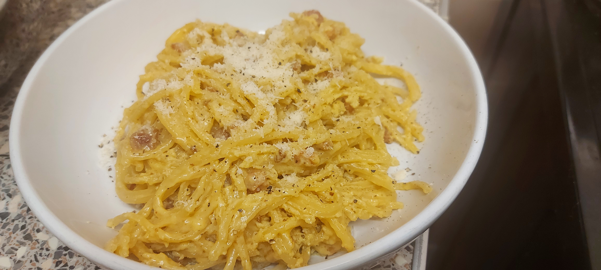

🍝 Spaghetti Carbonara

This recipe was originally given to me by one of my oldest Italian friends Andrea,
He is an absolute wizard in the kitchen and I wish I was sober enough to remember how he cooked his risotto when he last made it.
Fortunately, I did remember this one and through painstaking trial and error requiring multiple excuses to cook it again, here is the tried and tested version of this classic Italian dish.
Ingredients:
- 125g of Pasta per person
- (Spaghetti, Tagliatelle or Linguine)
- 80g of pancetta per person
- 25g of butter per person
- 1 egg (with white)
- 1 egg yolk per person
- 25g Grated, Hard Italian Cheese per person
- Grana Padano, Parmigiano or Pecorino if you can get it
- 1 tsp Salt
- a metric ton of Black pepper
- 1 Clove Garlic (minimum.. 3x max)
- 🍷 a splash of white wine
- (This also gives you a good excuse to buy a bottle of white wine as it's in the recipe)
Key Point: This receipe scales up extrememly well and is great at dinner parties. Make sure you have pans and bowls big enough to support your ambitions..!
Method:
- Mix all egg and cheese together in a bowl (preferably metal) with plenty of black pepper
- If you didn't think "oh maybe I put too much black pepper in" Then you need to put more
- Cook the pasta al dente as per instructions, with 1 tsp olive oil and 1 tsp salt in the water
- For spaghetti this is around 5 mins, set a timer
- Heat the butter in a deep pan or wok, melt but DONT let it burn.
- Add the garlic and pancetta, fry on a high heat until golden brown (texture like sun)
- Drain the pasta, saving one cup of pasta water for later
- Add the al-dente (remember?) pasta to the pan wth the garlic and pancetta, stir well
- the pasta should be coated with the oil and other ingredients, now add a splash of white wine
- turn the heat down to medium and add pasta water as needed, finish cooking the pasta in ths way
- Add the pasta, garlic, pancetta pan to the egg mix (or vice versa)Stir immediately and briskly
- Mix through until glossy and steaming, service with grated hard cheese, black pepper and a glass of white wine
Key Point: This dish is heat sensitive, too much and you will scramble the eggs, too little and you will undercook them. It's a fine balance but with practice you will do well. You will probably mess this up on the first try so don't put pressure on yourself without a little practice first
Key Point: Kill the heat when you transfer the pasta/pancetta to the egg/cheese mix ,the residual heat from the cooked pasta will gently cook the mixture
Wine Suggestions
Carbonara is a big, rich, creamy dish with strong but bold flavours. It favours a dry, acidic but equally bold yet fruity white wine to complement it. Uncannily, many Italian white wins fit the bill.
- Pinot Grigio
- Soave
- Sauvignon Blanc
- Unwooded Chardonnay